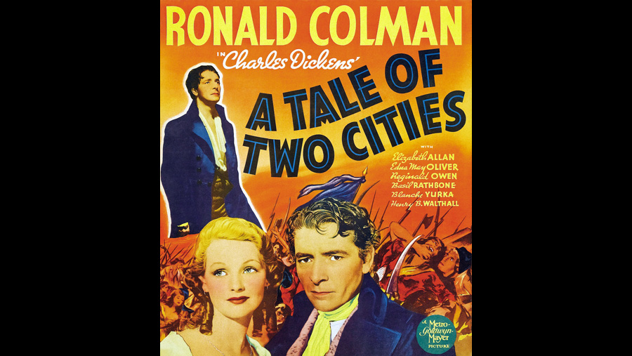

1935

CAST
Sydney Carton
-
Ronald Colman
Charles Darnay
-
Donald Woods
Lucie Manette
-
Elizabeth Allan
Jarvis Lorry
-
Claude Gillingwater
Dr. Alexandre Manette
-
Henry B. Walthall
Miss Pross
-
Edna May Oliver
Madame Defarge
-
Blanche Yurka
Monsieur Defarge
-
Mitchell Lewis
'The Vengeance'
-
Lucille LaVerne
C J Stryver
-
Reginald Owen
Jeremiah 'Jerry' Cruncher
-
Billy Bevan
John Barsad
-
Walter Catlett
Seamstress
-
Isabel Jewell
Gabelle
-
H.B. Warner
Mrs. Cruncher
-
Eily Malyon
Woodcutter
-
Tully Marshall
Lucie - as a Child
-
Fay Chaldecott
Jerry Cruncher Jr.
-
Donald Haines
Judge in 'Old Bailey'
-
E.E. Clive
Marquis St-Evrémonde
-
Basil Rathbone
Morveau
-
John Davidson
Tellson Jr.
-
Tom Ricketts
Gaspard
-
Fritz Leiber
Jacques
-
Barlowe Borland
Judge at Tribunal
-
Robert Warwick
Prosecutor
-
Lawrence Grant
Prosecutor
-
Ralf Harolde
CREATIVE TEAM
Director
-
Jack Conway
Screenplay
-
W.P. Lipscomb / S.N. Behrman
Producer
-
David O. Selznick